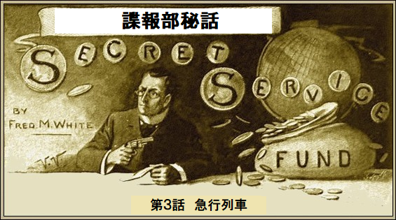
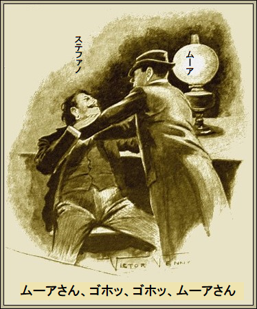
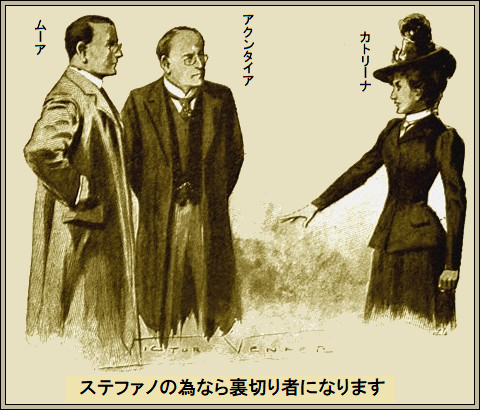
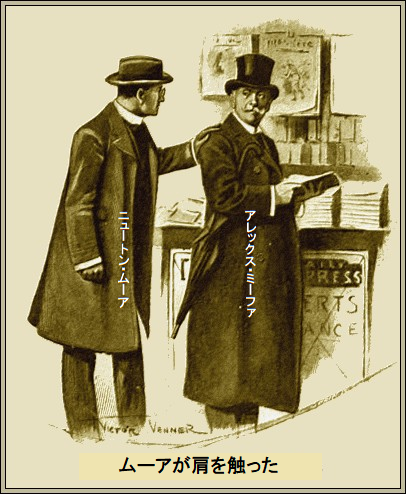
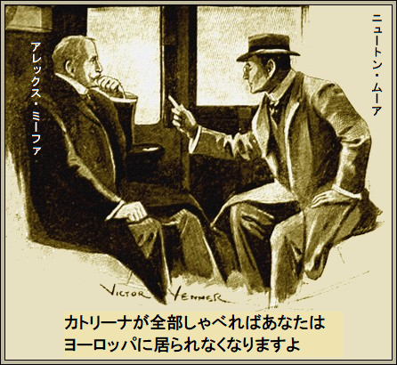
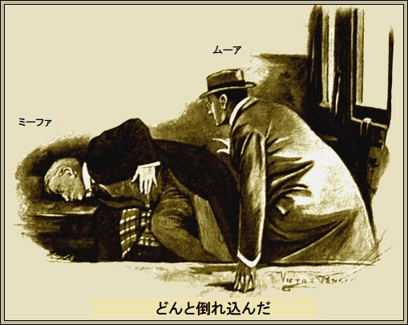

［＃改ページ］
黄色い霧がグラスゴー地域の一部にかかった。悪臭がニュートン・ムーアの鼻孔にツーン、
ムーアは壁に寄りかかって
こうして震えながら立ちんぼうで何時間も待っている。もし
今までムーアが担当した中で最大の事件だ。うまくいけば欧州一
しかし、当分ムーアは、ほぼ暇つぶし状態。これは最終局面への手段であり、ちょっとした計画の一部、煙草をくゆらせながら真夜中に考えたものだ。
さみだれに人が通る。そのとき、ひときわ軽い靴音が聞こえ、ムーアが緊張した。上背のある男が通り過ぎた。すごいハンサムで彫像のような面立ち、金の耳飾りをつけている。あきらかにイタリアの
やがて、とある建物の階段を上がって行った。そこは部屋をいろんな人に賃貸する建物、だれでも所有でき、五パーセントを慈善団体に戻す。三階の一室へ伊達男がはいって行った。
ムーアは猫のように獲物のあとをつけた。扉を開けっぱなしで、伊達男がランプに火をつけた。扉を閉めた直後、この伊達男は首を絞められ、椅子にどさっと押し倒され、ドス黒い恐怖に凍りついた。

「ムーアさん、ゴホッ、ゴホッ、ムーアさん」
ムーアが手を
「ここで会うとは思ってなかったろ、ええ、ステファノ」
ステファノが情けなく首を上下に振った。黒い瞳をぼーっとムーアに向けた。
「何も悪いことしてませんよ」
と不機嫌だ。
「フィレンツェからお前と一緒に来たのはトスコとバーサ、それにもう一人、さらにカトリーナも
ステファノの瞳がさらに広がった。
「この国じゃな、公共建物をぶっ飛ばして人命を危機にさらしたやつは二十年以下の懲役刑は
ステファノは震えあがった。将来が台無しだ。どうして単なるはったりだと分かる？ ムーアが容疑を吹っかけると、ステファノの態度が軟化した。
「どうなさるおつもりで」
「カトリーナが戻るまでここで待つさ」
ステファノがまたしても脅えた。ペラペラ抗議することに、カトリーナはフィレンツェの誇り、酒場の花、こんな陰気なブリテン島にはいない。
ムーアが、女物の帽子と上着を指差して、笑った。
「ふふふ、楽になる方法を教えてやろう」
「えっ、見過ごしてくださるんで」
「条件次第だよ、条件次第だ、もちろん。なあステファノさんよ、人生の動輪てえのは妥協という待機線でよく回るんだぜ。夜中前にはトスコとバーサは現行犯で逮捕される。来た道を戻りたけりゃ、カトリーナとお前さんから情報をもらわなくちゃ」
「しかしムーアさん、あなたほどの大物がこんな小物を」
ステファノが肩をすくめ笑顔を作ったのには安っぽいお世辞の臭いがあった。
「小物もありだ。お察しの通り、
「ミーファも関係しているのですか」
「ああ、やつもそうだ。偶然知った。訳を知らねばならん。やつは明日、朝の急行でロンドンへ行く。俺も一緒に行く。間違いなく面白い話になるぞ」
ステファノは面倒くさそうに聞いていた。
「ムーアさん、私にどうしろというのですか。友達を裏切れとでも」
ステファノが言い淀んで、身震いした。想像するに、うつろな両眼に見えたのは、死体が汚水に浮かび、胸に真っ赤な血のついた姿だ。
「お前じゃなく、カトリーナだよ」
ステファノの口から絞り出すような悲鳴が聞こえた。
「カトリーナは絶対しゃべりませんよ」
「なら、お前を逮捕して、やつらと同罪にする。カトリーナは欧州一賢くて破廉恥な女だが、ステファノという弱点がある。お前にぞっこんってことだ。カトリーナが俺の言う通りにしなければ、愛人のお前には二度と会えないってことさ」
きつい冗談がステファノにぐさり刺さり、怒ることさえできなかった。深いため息が出たのは安心半分、怖さ半分のせい。
そのとき軽い足音が階段から聞こえてきた。扉が開き、女が入って来た。
驚くべき美貌の持ち主だった。完璧な美貌には強さと、覚悟と、勇気がありあり。だが、両眼はうるみ、深紅の口元には情熱があった。瞳がきらりと光り、口を開いた。
「逃げなくちゃ。トスコとバーサが逮捕されたのよ」
「それだけじゃないぜ」
とムーアが
カトリーナが話し手の方をぱっと振り返った。まさに旧敵同士だった。そして今まで、ムーアは対戦に良いところが全くなかった。
「最後に会ったのはたしかフランスね」
と女がほほ笑み、危険を悟ったが、素知らぬ顔だ。
「忘れるもんか。もうすぐステファノは仲間のトスコやバーサと同じ運命だぜ」
とムーアがあっさり言った。
女が両腕を組んだ。顔がうっすら暗くなった。まさしく琴線に触れたからだ。
「取り引きに来たの？」
「ああ、確かにキミは素晴らしい女だ。トスコとバーサとミーファは到着以来ずっと監視していた。ステファノは俺の都合で何とか保護したけど」
「ミーファを裏切れというの？」
「お察しの通りだ。キミのささいな共同謀議はどうでもいい。失敗したし、失敗するにきまっている。ただし法律は共同謀議に実に厳しいぞ。キミのやるべきことは明日証言台に立って、トスコとバーサに有利な証言をすることだ。言うまでもないが、尋問に
「もし拒否したら？」
ムーアがポケットから笛を取りだした。
「そのときにゃ、この小さな笛を吹けば、一分後この部屋は警官だらけになる。一時間以内に刑務所へ行き、やがて長期服役することになる。だがそんなに深刻にならんでいい。もうミーファの手先になるな。最後の忠告だ、奴と連絡を取るな」
長いことかかってカトリーナが返事した。どろーんとした眼をステファノへ向けたあと、ふっと優しくなったのは、しくじって不安そうに椅子に丸まったステファノを見た時だった。
「ステファノを苦しませるなんて、できない。ミーファが言ったのは……」
何か言おうとしたが、押し留まった。頭をテーブルに垂れ、
「私ひとりの
＊
ムーアが中央警察署に到着したとき、強いスコットランドなまりの頑固な警部補が待っていた。明らかにロックウッド警部補はムーアを歓迎していない。
「困りましたな、困りました」
「驚いたね。警部補が困ったとは」
「確かにあなたは刑事じゃありませんが」
「その通り。ロックウッド警部補、愉快というのは
「はい。でもミーファと手先のステファノの逮捕が許可されないのはなぜですか。理解できません」
ムーアはぐっとこらえてほほ笑んだ。
「ミーファが大物だからだ。いまミーファは貴重な設計図を持っている。やつがグラスゴーの港へやって来たのは潜水艦の秘密を盗む為だが、なんと手に入れやがった。数週間前、ミーファが下級将校をそそのかして盗ませ、今週、設計図を受け取りに来た。実際、ミーファはダイナマイト事件に何の関係もない。目的の為のまやかしだ。やつは潔白を証明するのにちっとも困らないから、俺の手から逃げられる。一番重要なのは設計図を取り返すことだ。分かったか」
「ええ。でも、どうやって取り戻すんですか」
「それは言えない。何日も計画を練り続けていたんだが、ついに完結する。設計図は取り戻す、絶対に」
ロックウッド警部補は不機嫌だ。
「とても変則で、納得できません。私は何も知らないのですから。あした囚人を再拘留するだけです。さらにロンドンから法廷弁護士が送り込まれてきます。英国政府が総力であなたを援助しているみたいですね」
「実を言うとそうなんだ」
ムーアが率直に厄介事件の行く末を見立てると、ロックウッド警部補がむっとした。警部補はゲームの単なる駒だと、ムーアがズバリ指摘したからだ。そのあと諜報部員ムーアはカレドニアン・ホテルに向かった。
＊
ホテルで待っていたのは
「内務省があなたを送り込んでくれて感謝します。ロックウッド警部補から本件を聴かれたと思いますが、マクンタイアさん」
「ムーアさん、実は何も知りません。二人の男を共謀罪で起訴することは知っていますが、それ以上警部補から聞いてません。私の見解では明日の訴訟は純粋に型通りです」
と著名な法廷弁護士マクンタイアがのたまった。
「よしてくれ。数か月前、美人のカトリーナの話を覚えているでしょう」
マクンタイア弁護士がうなずいた。新たな興味が加わった。夕暮れ時に聞いたカトリーナとステファノの話を詳しく語ると、一層興味が深まった。
ムーアがさらに踏み込んで話したのはミーファがなぜ逮捕を免れているか、また奴を逮捕する企ての仕組みだった。
マクンタイア弁護士が、
「まったくウィルキー・コリンズ並ですね。おっしゃる通りミーファが迷信深い男なら、あしたロンドン到着まで奴の神経を相当痛めつけられますよ。カトリーナはステファノを救うために共犯者に不利な証言をしますかね？」
ムーアが、
「確かです。ステファノは絶対に証言しませんが、カトリーナにそんな障壁はありません。少ない犠牲で多くの共犯者を救ったとカトリーナは言い訳できます。ここに証言台でカトリーナに
マクンタイア弁護士が深くうなずいた。驚いて面食らったのはムーアの計画性、巧妙な仕掛け、実行力、これでどんな難事件もスパッと解決してきた。
「こんなすばらしいのは聞いたことありません」
そのとき、給仕係が
「ここへ案内しろ。さて、マクンタイアさん、カトリーナ本人が来ます。また会えると思ってました」
カトリーナが入ってきた。顔面蒼白、両眼を見開いていたが、誇りは少しも失わず冷静だ。
ムーアが簡単に紹介して、マクンタイア弁護士がここに来た用事は、カトリーナに関係があると説明した。
「マクンタイアさんは状況をよくご存じですよ」
とムーアが意味深に言った。カトリーナが会釈した。持ち前の知性で意味を素早くつかんで、しゃべった。
「来た理由がお分かりでしょう。あれこれ時間を使いたくありません。共同謀議は失敗しました。この世でほかの誰より関心のある人の命が危険にさらされています。他人の為に自分を犠牲にするものですか、今から犠牲になろうとするときに。ステファノの為なら裏切り者になります。私を信じた人を売り渡します。どんな質問でも

カトリーナが降参した。笑みに大きな苦しみがあった。いま愛に溺れた女がくずおれ、覇気が消え、恥じらいすら瞳に浮かんでいる。
「あした法廷で証言してください」
とマクンタイア弁護士が言うと、カトリーナがうなずいた。当分言葉が出ない。発作的に腕組みし、真っ白いきれいな歯列で唇を噛むと、痕跡が残った。
やがて口を開いた。
「お望み通り言うわ。
興奮が去り、両眼に涙が
「座って、話しましょう」
とマクンタイア弁護士。
カトリーナが椅子に腰を下ろした。法廷弁護士のいろんな質問にすらすら答えた。だがこれらの質問は一つとして書きつけた質問じゃなかった。ムーアがマクンタイア弁護士に手渡したのに。
＊
新聞や雑誌が山と積まれた売店に、色白で夢見顔の男が何気なく立ち寄った時、ムーアが豪壮なグラスゴー駅にはいって来た。夢見顔の男が振り向いて、一瞬口をへの字に結んだのはムーアが肩を触った時だった。

「アレックス・ミーファさん、こんにちは」
ムーアがこう話しかけるとミーファが笑った。二人は昔から敵同士、お互い力量を認めていた。両人とも不屈の闘志と決断の持ち主、逆境時に発揮する。
けだし、名の知れたスパイは例外なく神経質、夢想的、ムーアなど平時でもそうだ。だがそんなそぶりは今のところ微塵も見せなかった。
「これはムーアさん、お会いできてうれしいですな。グラスゴーは長いのですかな」
冷静で横柄なおいしい質問を聞いてムーアが喜んだ。
「まさにあなたと同じですよ」
「今日は二人でロンドンに行けますかな」
「そのつもりですよ、ミーファさん。列車の個室が自由に使えますし、旅の食事も用意してます。今日あなたがロンドンへ行かれるということなので段取りしました。よろしければ私の個室にいらして、昼食をご一緒しませんか。二人分たっぷりありますから」
ミーファの目が輝いた。
「食事まで気を使って嬉しいですな。でもこのもてなしの見返りに何をお望みかな」
「水曜日にあなたが手に入れたグラスゴー港の潜水艦設計図ですよ」
もう当分ミーファは笑わない。知的で感性的な顔が深刻になった。出来る男、ミーファは決して敵の強さを見くびらないし、ことムーアに関しては金と奇策に際限がないことを長いこと認めていた。
「そうですか、なんか書類が盗まれたのですかな」
「その通り。あなたがお持ちと思いますよ。そのように確信したので、全て段取りを整えました」
「おやおや、自信がおありですな」
「絶対ですよ。同様に確かなのは深夜までに盗難書類をあなたが自発的に返してくれます。さあ行きましょう」
ミーファがムーアと長いプラットフォームを歩くと、靴音がカツカツ響き、蒸気の排出音がシューシュー鳴った。やがてムーアが客車の前に止まると、屈強なポーターが警備していた。
「一緒に行きますよね」
とムーアが念を押した。
ミーファが重々しくうなずいた。恐れていないが、明らかに困っている。ムーアはゲームの規則をことごとく破る。あたかも剣の達人が相まみえるようだった。
一方は新しい攻撃と防御の使い手、つまりカルト、テルツを防ぐ奇抜な手法、片方は古い剣法の使い手だ。
「行きますよ。率直に言ってあなたがよくわかりませんな」
今までこの種の勝負は秘密裏に行われてきた。自分の右手を敵の左手が悟ることはできない。つまり構えが解けて攻撃するとき始めて分かる。通常の現場であれば、最後の最後に大
ミーファが個室の隅にどっかと座り、煙草をつけた。扉の閉まる音がバタン、笛の音がピーッ、巨大駅がゆっくり後退し始めた。ムーアは新聞を熱読しているようだ。
「ムーアさん、私と勝負しないのですかな」
ムーアが新聞を脇に置いた。
「もうゲームは始まってますよ。でもミーファさん、試合そっちのけであなたの
「でもキミ、確かめようがないじゃないかな」
「できますよ。はったりじゃありません。ところで、この新聞記事に面白いことが書いてあります。内容はトスコとバーサという名前の爆弾魔が昨夜現行犯で逮捕されました。関係者の情報ではきょう判事に尋問されるようです。二人と知り合いだと思いますが」
「名前は聞いたことがあるようですな」
「一緒にイギリスへ来ましたね」
「またもや正確ですな。その情報は逮捕理由になりませんよ。おっと、言い過ぎましたかな」
ミーファは努めて微笑みながら話した。意図をつかみ始めた。ムーアは新聞で脅して、バカげた爆弾事件と関係づけようとしている。
「想像力を失うのはつらいですな、四十代には無いから。いままでムーアさんはお利口さんだと思ってましたけどなあ」
ムーアがニヤリ。核心がはっきり見えた。
「承知済みですよ、みんなあなたの手先でしょう。本当の目的を隠すために英国へ同行しましたね。本件を白状の道具に使う気はさらさらありません。後で分かるでしょうけど、新聞記事がゲームの

困った表情がまたしてもミーファの顔をよぎった。繰り返し不安で落ち着かないようだ。ムーアの性格がよくわかった。
「カリーナは仕事内容を絶対話さないな。そんなことは
「そうじゃないかもしれませんよ。愛人を救うためならどんなこともやります。他の二人に不利な証言をして、ステファノを守りかねません。トスコとバーサはバカな理想家で、理想とかの為に死ぬ覚悟なんだから。おそらくカトリーナは共犯者に不利な証言をしますよ。たぶん担当弁護士はカトリーナの過去を全部知っているし、ここが重要ですが、ステファノをかばっていると承知済みです。こんな世界で生き抜く弁護士なら、いいように女を
「カトリーナは
とミーファがかすれ声。
ムーアがあっさり言った。
「喋らざるを得ない訳はもう言いましたね。カトリーナが驚くべき内容を暴露すれば、数時間以内に英国中の警官があなたを監視します。大陸に行っても同じです。ロンドン到着ごろには私の予言が正しいか誤りか分かります。もし正しいなら、どうやって到着時に拘留から逃れられますか。拘留すれば、盗難設計図はすぐ取り戻せますよ」
ミーファが痛いところを渋々認めた。ムーアはダイナマイト事件の詳細を知ってるようだ。いまになってミーファは事件に触れた愚かさを
「やつらと俺は結び付けられまい」
「そんなことはしませんよ。愚かどもは単なる手段、詰めに利用するだけです。自発的だろうがなかろうが、奴らを使って、あなたを人生最大の難局に追い詰めますよ。そのときに、あなたの命と自由と引き替えに、ある条件を提案します」
「カトリーナは信頼できるし、
とミーファは不機嫌だ。
ムーアが時計を見た。会話はとぎれとぎれになり、一時間以上経過した。
「カーライルを過ぎたら、はっきり言いましょう」
「そこで電報を待つのかな」
「まさか。旅でチョロチョロ動き回るのは嫌です。その為に個室を予約したのです。今からロンドンに着くまで列車を離れるつもりはありません。もうひとつお約束しましょう。今日グラスゴーの裁判官の前で起こったことを教えますよ」
ミーファが笑ったけど陽気さはない。ムーアがだんだんいらついてきた。列車はカーライルを過ぎたがムーアは無言だ。さらに一時間過ぎてもひと言も言わない。
この頃になると列車は草原の真ん中を走っていた。
ムーアは長いこと外をぼーっと眺めていた。そのときミーファに向き直り、
ムーアの顔色が変わった。両眼がキラキラ光って動き、顔面が興奮して蒼白だ。
「カトリーナが
ミーファが息をのんだ。ミーファは力と強さを兼ね備えると同時に、迷信をとても信じやすい。さては俺の知らない超魔術をムーアが使ったのか。あるいはバカげた悪ふざけなのか。
「ひと言も信じないさ」
とミーファは不機嫌だ。
「ロンドンに着いたら証拠が手にはいります。もっと詳しく知りたいでしょう。では私の両眼を使ってみましょう」
ムーアが後ろに反りかえり、両眼を物憂げに閉じた。
「裁判所は満員。ステファノは後ろに隠れて、
ムーアが眼を開け、背筋をピンと伸ばした。ミーファは青ざめ、死人のよう。笑おうとしたが、薄い唇が震え、ひと言も言えなかった。
ミーファが緊張のあまり激しく震え、
「やめろ。
「神がおわすなら、私の言ったことは全て真理です。ロンドンに着く頃には夕刊紙全てに印刷されています。ところで、昼食の中身を拝見しましょう。一時間かそこらで、もっと情報を知らせますよ」
ミーファは鳥の手羽先をつまんだ。ムーアもたっぷり食べた。
どうやらミーファをものにした。ムーアは午後三時ごろ、座席に戻り、再び窓から外をぼんやり眺めた。見とれていた風景は荒涼とした岩肌が延々と続く。
「さらに情報は？」
とミーファがつぶやいた。
「ありますよ。カトリーナが証言を終わると、裁判が休廷し、囚人らが二時十五分に再拘留されました。カトリーナは何もかも残らず打ち明けました。ウィーンで起こった陸軍省武官の殺人まで詳細に立ち入ってます。いきさつを事細かく証言しましたよ。ミーファさん、あなたは殺された男の時計をいま身につけていますね。これはうかつでした」
ミーファが恐くなって、絶望して思わず叫んだ。左胸をかきむしり、顔を下にドンと倒れ込んだ。

ブランデーを少し飲ませると、唇に肌色が、瞳に輝きが戻った。
「何でわかったんだ？」
「その秘密は私の胸にしまっておきますよ。もう私の力を信じていいでしょう」
ミーファが最後の悪あがき、黒い霧のようにまとわりつく恐怖を払いのけようとした。
「全部憶測だろ」
「ロンドンで分かりますよ。問題はロンドンのあと、ロンドンのあとです、全てはあなた次第です」
列車は緑の風景を突っ走り、後ろに流れる鉄路を残し、ついに青々とした畑が芝生や
ミーファがかすれ声で、
「新聞、新聞だ」
ムーアが売店から号外をひったくり、休憩室へミーファを引っ張った。薄っぺらの新聞を開いた。ムーアは勝ち誇った表情を顔に出さず、二段組みの派手な記事を指差した。
「自分で読んで。全部書いてあります」
ミーファが大理石テーブルに新聞を広げた。徹底的に暴露されていた。ムーアのふざけた予言が正確に書いてある。衝撃的な証言も、カトリーナの失神も、オーストリア駐在武官の殺害も。
ミーファは読み終え、心身ともに崩壊した。超人的な諜報部員ムーアの
「負けたよ。何が欲しいんだ？」
「あの設計図ですよ。設計図を返せば自由です。設計図を回収すれば私の任務は終了する。誰から入手したかも言いたまえ。もし条件を拒否すれば、合図一つで拘留される」
ミーファが苦々しく笑った。
「拒絶は出来ないな。完全に無力だ。自分の自由と生命は他の何にも勝る。一緒に私のホテルへ行こう。欲しいものが手に入るぞ」
三十分後、貴重な設計図がムーアに戻った。すべて正規品、一枚の欠品もなく、書き写す余裕もなかった。
「これからどちらへ？」
とムーアが
ミーファは時計をじっと見ていた。半分物思いに沈んで、旅行かばんを見た。それから首を左右に振った。
「あえてリスクは冒さない。そっとぬける。サザンプトンへ行ってジャージー島経由でフランスへ渡る。あばよ、ちくしょうめ、キミは出会った中で最高に賢い」
＊
ムーアの手渡した貴重な書類をなぜながら、陸軍省のお偉方が言った。
「よくやってくれた。事情が事情だから、デザートの中断を
「閣下、そうせざるを得ませんでした。さもないと設計図は永久に取り戻せませんでした。それに奴は必ず捕まえます」
これに喜んだのか、閣下がにっこり笑って言った。
「ご苦労だ。ところで教えてくれないか、どうやって途中で情報を取ったんだ？ 我が人生でそんな素晴らしいことは聞いたことがない」
ムーアが謙遜して答えた。
「古い手品の単なる変形です。前もってマクンタイア弁護士の質問はよく知ってました。裁判の進行中、電報線を十人の協力者と結び、鉄道のそばの目立つ場所に配置しました。故意に電報を盗聴させました。電報を解読したら、回光通信機を使って列車の私に光らせました。分ればとても簡単でしょう。もし曇っていれば、計画を少し変えて、手旗信号を使うつもりでした。死ぬほど怖がらせることが出来ました。一生、ミーファは私が超能力を持っていると信じます」
ムーアが思い出し笑いした。お偉いさんもつられて笑ったが、任務を完全に承認した笑いであった。
「やり方が分かれば簡単なようだ。感謝どころか実に愉快だ。煙草を吸いたまえ」
ムーアの言い草、
「人生最高にうまい煙草です」
了